vignettes/seinebasin/V02_First_run.Rmd
V02_First_run.RmdThe aim of this vignette is to run the simulation of the semi-distributed model of the Seine River with naturalized flows.
## Loading required package: airGR##
## Attaching package: 'airGRiwrm'## The following objects are masked from 'package:airGR':
##
## Calibration, CreateCalibOptions, CreateInputsCrit,
## CreateInputsModel, CreateRunOptions, RunModelIt is necessary to run the
vignette("01_First_network", package = "airGRiwrm") before
this one in order to create the Rdata file loaded below:
load("_cache/V01.RData")GR4J parameters come from a calibration realized during the ClimAware project using naturalized flows.
library(seinebasin)
data(ClimAwareParams)
names(ClimAwareParams) <- c("id_sgl", "Tau0", "K0", "X1", "X2", "X3", "X4", "NashId")
ClimAwareParams## id_sgl Tau0 K0 X1 X2 X3 X4 NashId
## 1 TRANN_01 0.0 0.0 244.0 0.00 90.4 5.4 92.20
## 2 LASSI_20 0.0 0.0 228.3 -1.56 87.0 3.6 82.15
## 3 ARCIS_24 47.5 0.0 75.7 -33.33 667.3 11.7 98.40
## 4 BAR-S_06 0.0 0.0 279.8 0.00 86.5 5.2 91.28
## 5 MERY-_22 63.1 0.0 107.2 -32.47 590.3 3.1 97.31
## 6 NOGEN_13 48.0 0.0 85.0 -48.96 814.1 15.0 98.53
## 7 CHAUM_07 0.0 0.0 367.0 0.00 187.2 1.2 88.84
## 8 CUSSY_08 0.0 0.0 98.4 -4.40 419.8 2.1 74.62
## 9 STGER_09 0.0 0.0 404.8 0.00 174.3 1.1 89.10
## 10 GURGY_02 49.1 0.0 525.6 -4.59 144.6 0.0 91.46
## 11 AISY-_11 0.0 0.0 138.7 -3.72 116.0 2.3 82.50
## 12 BRIEN_03 15.5 0.0 295.1 0.00 72.6 4.6 94.16
## 13 GUILL_10 0.0 0.0 169.4 -5.91 107.2 2.0 77.22
## 14 CHABL_12 24.5 0.0 250.8 -42.80 553.3 0.0 82.68
## 15 COURL_23 25.1 0.0 1.0 -100.00 1759.8 15.0 97.85
## 16 MONTE_15 48.0 0.0 367.9 -100.00 976.2 0.5 99.57
## 17 EPISY_14 0.0 0.0 1.0 -63.15 757.1 3.0 53.79
## 18 ALFOR_16 5.1 0.0 250.8 -37.11 710.3 0.8 98.54
## 19 STDIZ_04 0.0 0.0 217.0 -0.20 78.2 3.5 90.42
## 20 VITRY_25 0.0 0.0 242.7 -1.78 109.2 4.3 91.83
## 21 LOUVE_19 0.0 0.0 197.6 -1.36 95.2 3.2 84.38
## 22 CHALO_21 48.0 0.0 616.1 -4.73 216.7 7.5 98.98
## 23 MONTR_18 0.0 0.0 20.6 -21.68 665.5 2.0 53.10
## 24 NOISI_17 36.4 57.6 26.2 -95.21 1568.5 4.2 96.68
## 25 PARIS_05 12.0 0.0 750.3 -100.00 921.0 0.0 99.82The lag and routing parameters of TGR are expressed as time delay in hours corresponding to the delay time between the farthest upstream inlet and the outlet of the sub-basin. Almost all sub basins have a routing parameter equal to 0. The only exception is for La Marne à Noisiel (NOISI_17) that has a routing parameter that can be approximated to a single lag parameter equal to .
This lag parameter has to be converted in a speed in m/s used in the airGR lag model:
# Convert TGR routing parameter into speed
params <- merge(griwrm, ClimAwareParams, by.x = "id", by.y = "id_sgl")
ParamClimAware <- sapply(griwrm$id, function(id) {
nodeParam <- ClimAwareParams[ClimAwareParams$id_sgl == id,]
# Record hydrological model parameters
Param <- unlist(nodeParam[c("X1", "X2", "X3", "X4")])
# Add lag model parameter if upstream nodes exist
UpstrNodes <- which(griwrm$down == id & !is.na(griwrm$down))
if (length(UpstrNodes) > 0) {
maxLength <- max(griwrm$length[UpstrNodes])
Param <- c(
maxLength * 1000 / ((nodeParam$Tau0 + nodeParam$K0) * 3600),
Param
)
}
return(Param)
})The CreateRunOptions() function allows to prepare the
options required by the RunModel() function.
The user must at least define the following arguments:
IndPeriod_Run <- seq(
which(InputsModel[[1]]$DatesR == (InputsModel[[1]]$DatesR[1] + 365*24*60*60)), # Set aside a one-year period for warm up
length(InputsModel[[1]]$DatesR) # Until the end of the time series
)We define the (optional but recommended) warm up period as a one-year period before the run period:
IndPeriod_WarmUp <- seq(1, IndPeriod_Run[1] - 1)
RunOptions <- CreateRunOptions(
InputsModel,
IndPeriod_WarmUp = IndPeriod_WarmUp,
IndPeriod_Run = IndPeriod_Run
)
OutputsModelsClimAware <- RunModel(
InputsModel,
RunOptions = RunOptions,
Param = ParamClimAware
)## RunModel.GRiwrmInputsModel: Processing sub-basin TRANN_01...## RunModel.GRiwrmInputsModel: Processing sub-basin STDIZ_04...## RunModel.GRiwrmInputsModel: Processing sub-basin BAR-S_06...## RunModel.GRiwrmInputsModel: Processing sub-basin CHAUM_07...## RunModel.GRiwrmInputsModel: Processing sub-basin CUSSY_08...## RunModel.GRiwrmInputsModel: Processing sub-basin STGER_09...## RunModel.GRiwrmInputsModel: Processing sub-basin GUILL_10...## RunModel.GRiwrmInputsModel: Processing sub-basin AISY-_11...## RunModel.GRiwrmInputsModel: Processing sub-basin EPISY_14...## RunModel.GRiwrmInputsModel: Processing sub-basin MONTR_18...## RunModel.GRiwrmInputsModel: Processing sub-basin LOUVE_19...## RunModel.GRiwrmInputsModel: Processing sub-basin LASSI_20...## RunModel.GRiwrmInputsModel: Processing sub-basin VITRY_25...## RunModel.GRiwrmInputsModel: Processing sub-basin GURGY_02...## Warning in FUN_MOD(InputsModel = InputsModel, RunOptions = RunOptions, Param = Param[iFirstParamRunOffModel:length(Param)], : Param[4] (X4: unit hydrograph time constant [d]) < 0.50
## X4 set to 0.50## RunModel.GRiwrmInputsModel: Processing sub-basin BRIEN_03...## RunModel.GRiwrmInputsModel: Processing sub-basin CHABL_12...## Warning in FUN_MOD(InputsModel = InputsModel, RunOptions = RunOptions, Param = Param[iFirstParamRunOffModel:length(Param)], : Param[4] (X4: unit hydrograph time constant [d]) < 0.50
## X4 set to 0.50## RunModel.GRiwrmInputsModel: Processing sub-basin CHALO_21...## RunModel.GRiwrmInputsModel: Processing sub-basin MERY-_22...## RunModel.GRiwrmInputsModel: Processing sub-basin ARCIS_24...## RunModel.GRiwrmInputsModel: Processing sub-basin NOGEN_13...## RunModel.GRiwrmInputsModel: Processing sub-basin NOISI_17...## RunModel.GRiwrmInputsModel: Processing sub-basin COURL_23...## RunModel.GRiwrmInputsModel: Processing sub-basin MONTE_15...## RunModel.GRiwrmInputsModel: Processing sub-basin ALFOR_16...## RunModel.GRiwrmInputsModel: Processing sub-basin PARIS_05...## Warning in FUN_MOD(InputsModel = InputsModel, RunOptions = RunOptions, Param = Param[iFirstParamRunOffModel:length(Param)], : Param[4] (X4: unit hydrograph time constant [d]) < 0.50
## X4 set to 0.50We plot the simulated discharges against the naturalized ones.
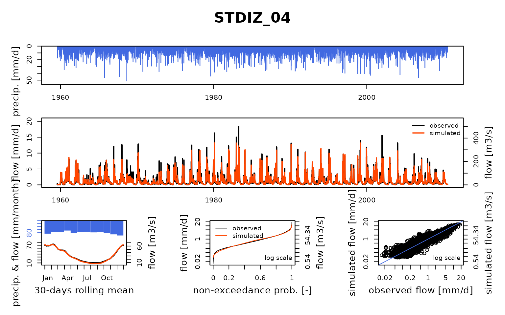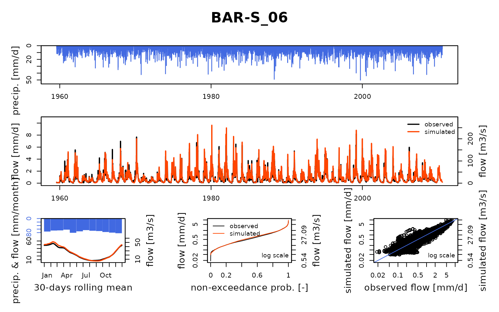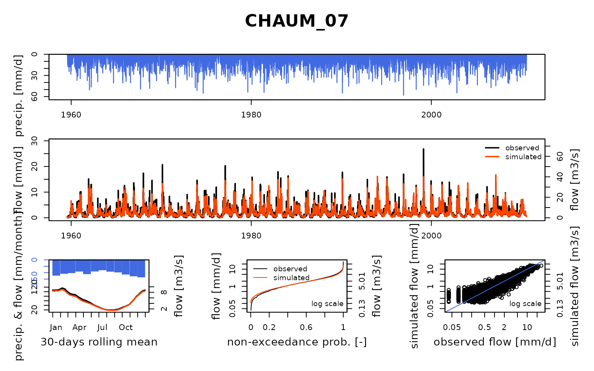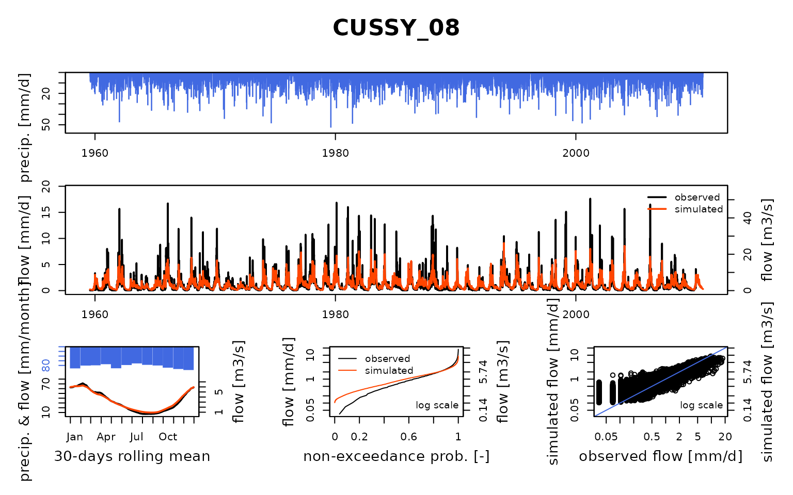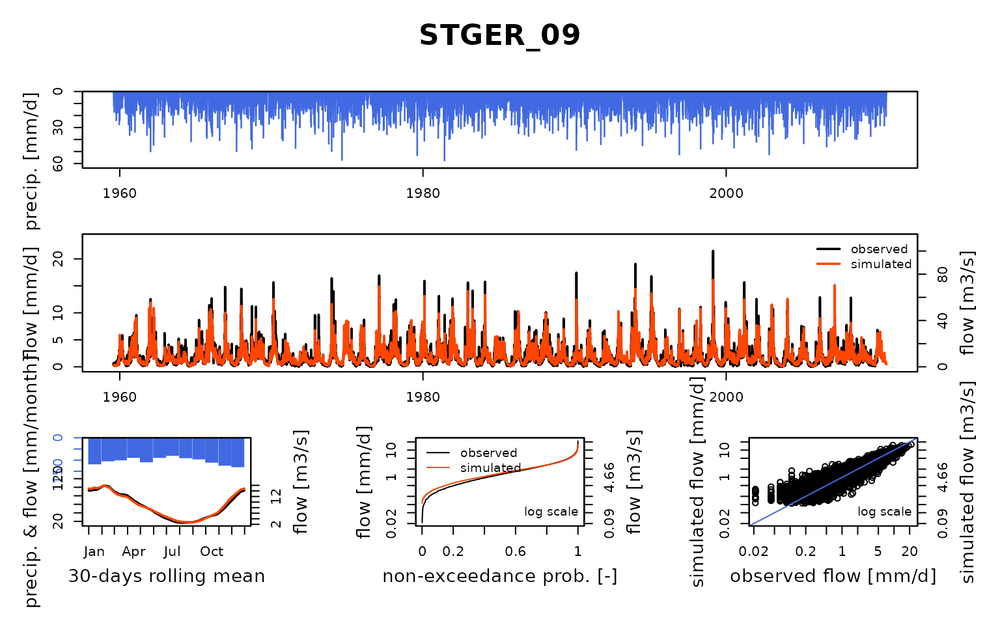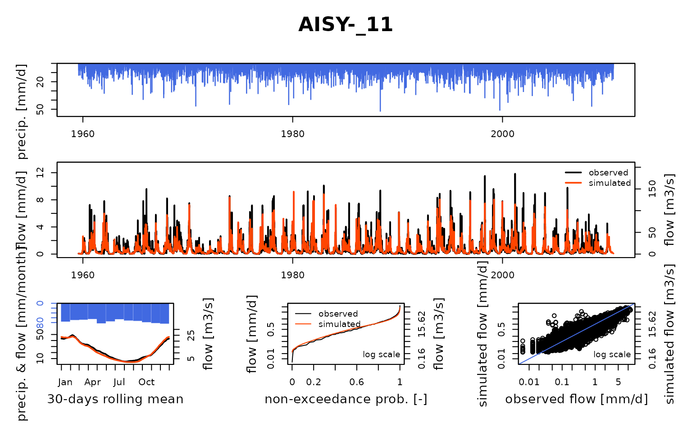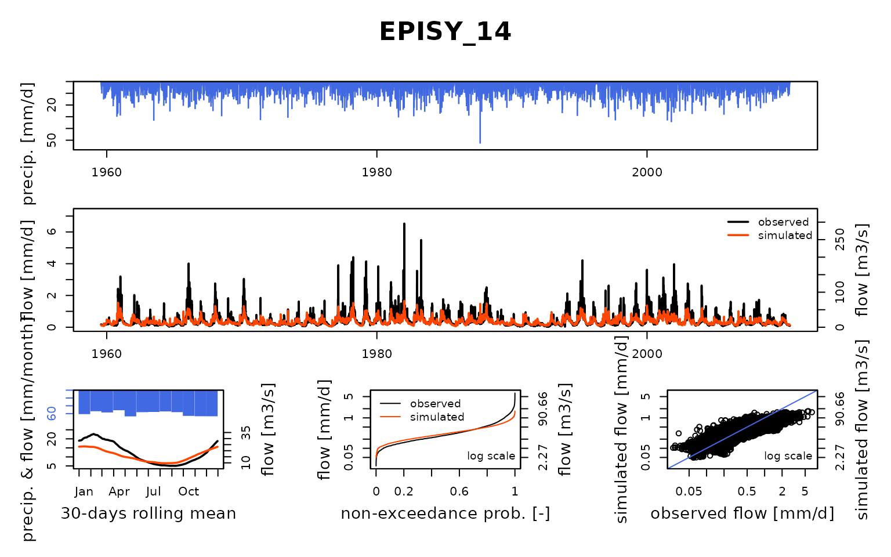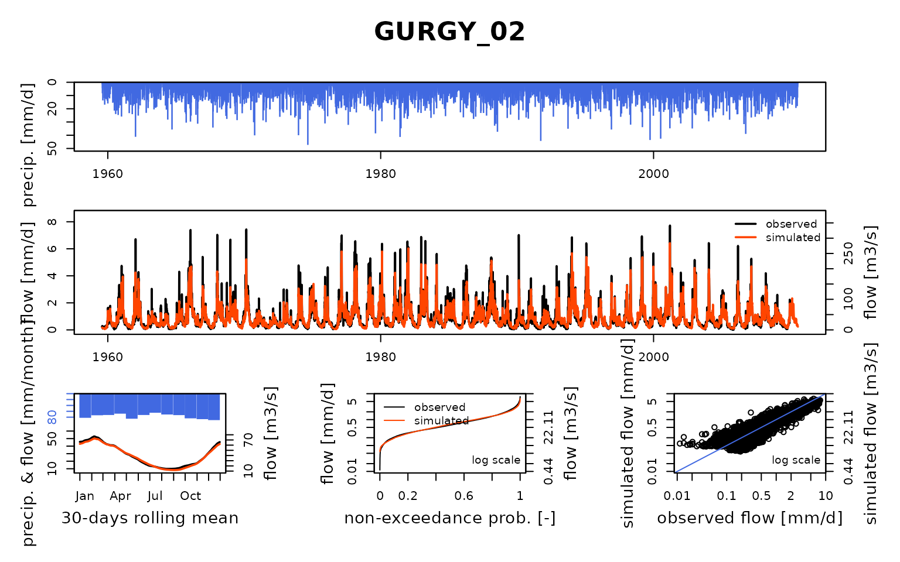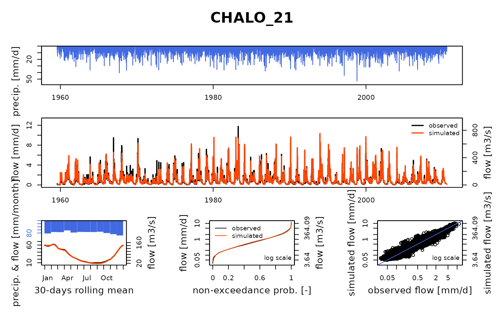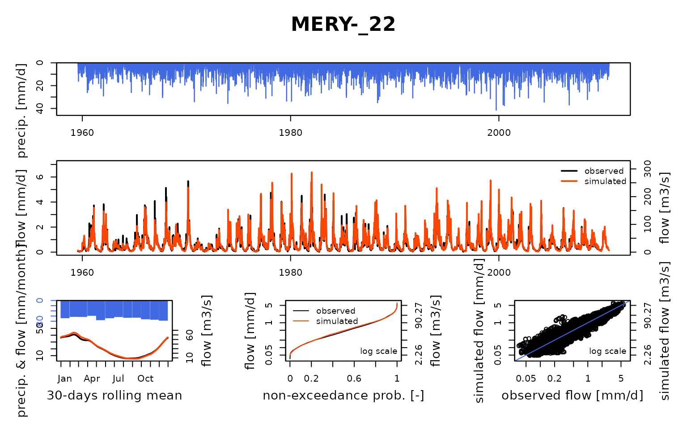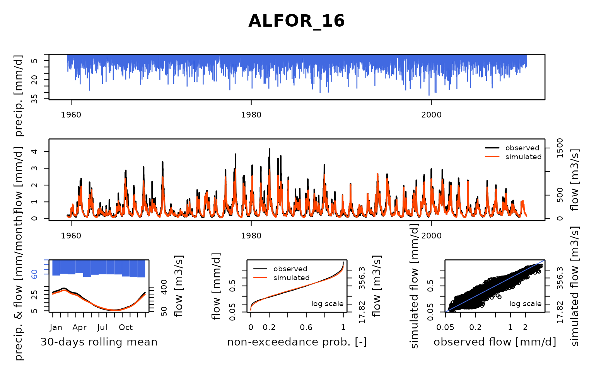
save(RunOptions, ParamClimAware, IndPeriod_Run, file = "_cache/V02.RData")